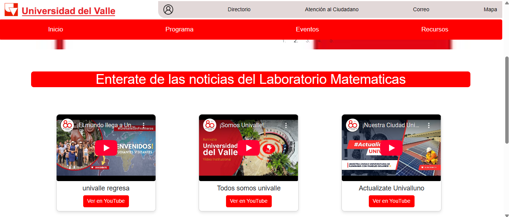
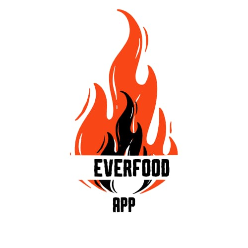
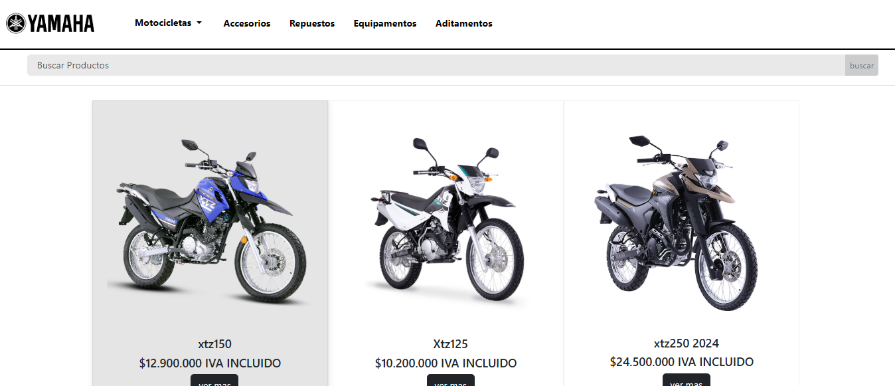

Perfil Profesional
Soy un profesional egresado del programa de Tecnología en Desarrollo de Software de la Facultad de Ingeniería de la Universidad del Valle,
actualmente cursando sexto semestre , segundo semestre en ingeniería de sistemas en la UNAD. Tengo la capacidad de dar soluciones a situaciones
reales a través del desarrollo de software y aplicar mis conocimientos en diversas áreas del diseño de interacciones humano-computador.
Me mantengo actualizado conforme evoluciona la disciplina, lo que me permite desempeñarme en cualquier lugar del mundo.
Perfil Laboral
Aportar mis conocimientos y habilidades en el desarrollo de software a una empresa innovadora, contribuyendo al éxito de proyectos tecnológicos y
continuando mi crecimiento profesional en un entorno dinámico y desafiante. Mi objetivo es marcar la diferencia a través la responsabilidad y la disciplina,
completando siempre los objetivos propuestos, abierta a absorber nuevos conocimientos y adaptarme a las tendencias emergentes en el campo tecnológico y
buscando constantemente mejorar.
Habilidades Técnicas
Levantamiento de información
- Analisis de información
- Análisis e requerimientos
- Casos de uso
- Historias de usuario
Lenguajes de programación
- Python
- PHP
- Java
- Html/Css
- JavaScripts
- SQL
Desarrollo de aplicaciones
- Desarrollo web front-end / Back-end
- Desarrollo de aplicaciones de escritorio
- Desarrollo de aplicaciones moviles Front-end
Frameworks y Herramientas
- Frameworks de desarrollo ( Django)
- Sistemas de gestión de bases de datos ( Sqlite - Mysql)
- React
Habilidades
Cuento con habilidades para resolver problemas de forma lógica y eficiente, adaptándome fácilmente a nuevos entornos y tecnologías.
Me destaco por mi trabajo en equipo, comunicación clara y capacidad para organizar tareas, cumpliendo objetivos y plazos con responsabilidad y enfoque.
Tengo experiencia en desarrollo web y móvil, aplicando lenguajes como Python, JavaScript y Java, junto a frameworks como Django y herramientas como React native.
Mi formación académica, combinada con proyectos reales como el Laboratorio de Matemáticas y mi emprendimiento Detalles Creativos, refleja mi compromiso con la mejora
continua y el aprendizaje práctico.
Proyectos
Proyecto: Pagina web - Laboratorio de matematicas
Desarrollé una página web institucional para un laboratorio académico, diseñada para publicar información sobre cursos, actividades, noticias,
proyectos realizados por estudiantes y talleres. La plataforma permite a los alumnos interactuar con el contenido, mantenerse informados y acceder
a recursos del área. Implementé un sistema de gestión de usuarios y contenido, garantizando una administración eficiente y una experiencia dinámica e intuitiva.
Proyecto: Everfood
Esta es una iniciativa que surgió a partir de una idea personal y en la cual participo activamente. Se trata de un proyecto multiplataforma pensado
para apoyar a pequeños emprendimientos, utilizando geolocalización para que los clientes puedan encontrar con mayor facilidad negocios locales.
Busca dar visibilidad a quienes emprenden, ayudándolos a generar más ingresos y alcanzar una mayor sostenibilidad. Actualmente,
el proyecto se encuentra en proceso de desarrollo.
Proyecto: Pagina web - Yamaha
Se trata de una página web desarrollada para una tienda Yamaha, enfocada en ofrecer una experiencia amigable tanto para el usuario como para el administrador,
gracias a su acceso intuitivo y diseño claro. El sitio permite consultar productos disponibles, desde motocicletas hasta repuestos, visualizar la ubicación
de las tiendas y acceder a enlaces oficiales de la marca. Participé principalmente en el diseño de la interfaz y en la implementación de algunas
funcionalidades del backend.
Referencias
- Nombre: Carlos David Tello Ruiz
- Profesión: Ingeniero en sistemas
- Cargo: Seniro development
- Empresa donde labora: Mercado libre
- Télefono: 310 590 0628
- Nombre: Danierl Pino Gomez
- Profesión: Ingeniero en sistemas
- Cargo: Coordinador del programa Tecn. Des. software
- Empresa donde labora: Universidad del valle/li>
- Télefono: 313 712 1845
- Nombre: Nicolas Cano Arrigui
- Profesión: Bachiller
- Cargo: Operador de maquinaria
- Empresa donde labora: Ferro Tripplex
- Télefono: 315 277 7686
- Nombre: Huberley Morales
- Profesión: Ingeniero civil
- Cargo: Jefe Inmediato
- Empresa donde labora: Oma asociados
- Télefono: 317 534 4625